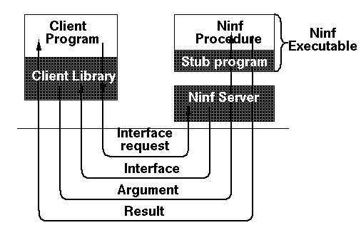
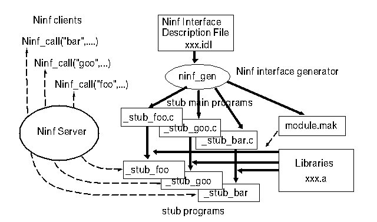

<HEAD>
<TITLE> Ninf: $@%M%C%H%o!<%/?tCM>pJs%i%$%V%i%j(J </TITLE>
</HEAD>
<BODY>
<center>
<H2> Ninf: World-Wide Computing$@;X8~$N%M%C%H%o!<%/?tCM>pJs%i%$%V%i%j(J </H2>
<P><STRONG>
$@:4F#(J $@;05W(J(RWCP)$@!"(J
$@CfED(J $@=(4p(J($@EEAm8&(J)$@!"(J
$@4X8}(J $@CR;L(J($@EEAm8&(J)$@!"(J
$@>>2,(J $@Ao(J($@El5~Bg3X(J)$@!"(J
$@D9Eh(J $@1@J<(J($@$*Cc$N?eBg3X(J)
</STRONG><P>
</center>
<HR>
<H3> $@$O$8$a$K(J </H3>
<P>
$@%3%s%T%e!<%?%M%C%H%o!<%/$NH/E8$KH<$$!"%M%C%H%o!<%/$rMxMQ$7$?>pJsDs6!%5!<(J
$@%S%9$,@9$s$K9T$o$l$F$$$k!#(J
$@6aG/!"(JWWW$@$KBeI=$5$l$k!"MM!9$J>pJs$KMF0W$K%"%/%;%9$3$H$r2DG=$K$9$k%5!<(J
$@%S%9$,Ia5Z$7!">pJs$r6&M-$9$k$3$H$,2DG=$K$J$C$F$-$?!#$9$J$o$A!">pJs$X$N(J
$@%"%/%;%9$,MF0W!"?WB.$G$"$k$3$H$K$h$j!">pJs$,$I$3$K$"$m$&$H$b!"I,MW$J;~(J
$@E@$G$=$N>pJs$K%"%/%;%9$9$l$P$h$/!"$=$N>pJs$r<j85$K$"$kI,MW$,$J$/$J$k!#(J
$@$3$N$h$&$J%5!<%S%9$NFCD'$O!"%f!<%6$,>pJs$N=j:_$r0U<1$9$k$3$H$J(J
$@$/MxMQ$G$-$k$3$H$"$j!">pJs;q8;$N2>A[E*$J6&M-2=$,$J$5$l$k$3$H$G$"$k!#(J
$@%M%C%H%o!<%/$NH/E8$K$h$j!"%M%C%H%o!<%/$rDL$8$F$NJ*M}E*$J5wN%$rD6$((J
$@$F!"7W;;;q8;$X$N%"%/%;%9$,2DG=$K$J$C$F$$$k!#(J
$@8=:_$N%M%C%H%o!<%/%5!<%S%9$O!"<g$K%G!<%?<+BN$N6&M-2=$G$"$k$,!"$3$l$r(J
$@?d$7?d$a$k$3$H$K$h$j!"7W;;$KI,MW$J;q8;!"$9$J$o$A(JCPU$@$J$I$N7W;;$KI,MW$J(J
$@;q8;$r$b9-0h$N%M%C%H%o!<%/$K$h$j2>A[E*$K6&M-$9$k$3$H$,9M$($i$l$k!#(J
<P>
$@2f!9$O!"$3$N$h$&$J>pJs;q8;$N6&M-$N$?$a$NOHAH$H$7$F!"(JNinf (Network
based Information library for High Performance Computing)[1]$@$rDs0F$7$F$$(J
$@$k!#(JNinf$@$NL\E*$O!"?tCM7W;;%i%$%V%i%j$d?tCM>pJs$KI,MW$J%G!<%?%Y!<%9$rDL(J
$@$8$F!"$*$b$K2J3X5;=Q7W;;J,Ln$N>pJs$J$i$S$K7W;;;q8;$rDs6!!&6&M-$9$k$3$H(J
$@$G$"$k!#(JNinf$@$O%5!<%P!<%/%i%$%"%s%H%b%G%k$r4pK\$H$7!"%5!<%S%9$O!"(JNinf$@%5!<(J
$@%P!<$rDL$8$FDs6!$5$l$k!#(JNinf$@%5!<%P!<$G$O!"?tCM7W;;%i%$%V%i%j$O<B9T2DG=(J
$@$J7A$GDs6!$5$l!"(JNinf$@$N(JRPC (Remote Procedure Call)$@$K$h$j!"%f!<%6!<%W%m(J
$@%0%i%`$+$i8F$S=P$9$3$H$K$h$j!"Ds6!$5$l$F$$$k7W;;;q8;$rMxMQ$9$k$3$H$,$G(J
$@$-$k!#%=!<%9%W%m%0%i%`$H$7$FDs6!$5$l$k>pJs$KHf$Y$F!"%$%s%9%H!<%k$J$I$N(J
$@:n6H$bI,MW$J$/!"I,MW$J;~$K:G?7$N$b$N$rMxMQ$9$k$3$H$,$G$-$k!#$3$N$3$H$K(J
$@$h$C$F!"7W;;;q8;$N6&M-$N$_$J$i$:!"6&M-$5$l$k%i%$%V%i%j$rA*Br$9$k$3$H$K(J
$@$h$j!"9bIJ<A$J7W;;$rF@$k$3$H$,$G$-$k!#(JNinf$@%a%?%5!<%P!<$O!"J#?t$N%5!<%P!<(J
$@4V$N>pJs$r4IM}$7!"%5!<%P!<$,Ds6!$9$k%5!<%S%9$NFbMF$d>u67$K1~$8$F!"E,Ev(J
$@$J%5!<%P!<$rA*Br$9$k5!G=$rDs6!$9$k!#$3$l$K$h$j!"%f!<%6$O<B:]$K7W;;$,9T(J
$@$o$l$k7W;;5!$r0U<1$9$k$3$H$J$/!"7W;;;q8;$rMxMQ$G$-$k!#$5$i$K!"%a%?%5!<(J
$@%P!<$rDL$8$F!"J#?t$N%5!<%P!<$rMxMQ$9$k$3$H$K$h$C$F!"J,;64D6-$G$NJBNs=h(J
$@M}$b2DG=$G$"$k!#(J

<h3> Ninf Remote Procedure Call$@$N35MW(J </h3>

$@Nc$($P!"(JC$@8@8l$K$*$$$F!"9TNs$N>h;;$r9T$&%k!<%A%s$r9M$($F$_$k!#(J
<PRE>
double A[N][N],B[N][N],C[N][N];
....
dmmul(A,B,C,N);	/* $@9TNs>h;;%k!<%A%s$N8F$S=P$7(J */
</PRE>
$@$3$l$r!"(JNinf$@$N(JC$@8@8l(Jbinding$@$G$O$3$N4X?t$r0J2<$N$h$&$J7A$G8F$S=P$9$3$H$,(J
$@$G$-$k!#(J
<PRE>Ninf_call(&quot;dmmul&quot;,N,A,B,C);</PRE>
$@4{B88@8l$KBP$9$k?FOB@-$r9b$a$k$?$a$K!"$3$N$h$&$K!"DL>o$N(JC$@8@8l$G$N8F$S(J
$@=P$7$H$[$H$s$IF1$87A<0$G(JNinf $@$N4X?t$r8F$S=P$9$3$H$,2DG=$G$"$k!#(J
$@B>$N(JRPC$@$H$N:GBg$N:90[$O!"%$%s%?!<%U%'%$%9>pJs$r;vA0$K%/%i%$%"%s%HB&$H(J
$@%5!<%P!<B&$G6&M-$7$F$$$kI,MW$,$J$$$3$H$G$"$k!#$3$N$?$a!"%f!<%6$,(JRPC$@$r(J
$@;HMQ$9$k$?$a$K$O!"BP>]$NL>A0$rCN$C$F$$$k$@$1$G$h$/!"4{B88@8l$H$N?FOB@-(J
$@$,9b$/$J$j!"%f!<%6$NIiC4$,>.$5$$!#(J
$@%G!<%?$r$I$N$h$&$KAw?.$7!"7k2L$r$I$N$h$&$K<u$1<h$k$N$+$N%$%s%?%U%'!<%9(J
$@>pJs$O!"<B9T;~$K%5!<%P!<$+$i<hF@$7$F!"$=$l$K$7$?$,$C$F(JRPC$@$,9T$o$l$k!#(J
$@$3$NNc$N>l9g$O!"%5%$%:(JN$@$NBg$-$5$K=>$C$?G[Ns(JA,B$@$,0z?t$H$7$FAw?.$5$l!"7k(J
$@2L$H$7$F$*$/$i$l$F$/$k%G!<%?$,!"G[Ns(JC$@$NNN0h$K=q$-9~$^$l$k!#(J
Ninf RPC$@$NFCD'$r0J2<$K5s$2$k!#(J
<OL>
<LI> $@4{B88@8l$+$i$N4X?t8F=P$K?FOB@-$N$"$k%$%s%?%U%'!<%9$rDs6!$9$k!#(J
$@8F=P$7$N<jB3$d0z?t>pJs$N%^!<%7%c%j%s%0!"%G!<%?$NAw<u?.$r9T$&$?$a$K!"(J
$@8F=P$N%$%s%?%U%'!<%9>pJs$rF0E*$K6!5k$9$k!#(J
<LI> $@>e5-$N%$%s%?!<%U%'!<%9>pJs$rMQ$$$k$3$H$K$h$C$F!"(J
$@%a%b%j6u4V$r6&M-$9$k%$%a!<%8$rDs6!$9$k!#6&M-$5$l$k0z?t$J$I$N%5%$%:$OF0(J
$@E*$K7hDj$5$l$k!#(J
<LI> $@<g$K!"?tCM7W;;%i%$%V%i%j$rL\E*$H$7$F$$$k$?$a!"4JN,2=$5$l$F$$$k!#(J
</OL>
Ninf$@$GDs6!$5$l$k4X?t$O4X?t<+?H$H%G!<%?DL?.$r9T$&%9%?%V$r4^$`<B9T%U%!%$(J
$@%k(J(Ninf Executable) $@$H$7$F%5!<%P!<B&$GMQ0U$5$l$F$$$k!#8F$S=P$7;~$K$O!"(J
$@$3$N<B9T%U%!%$%k$,%5!<%P$K$h$C$F!"(Jexec$@$5$l$k!#(J
$@$3$l$i$NDL?.$r9T$&$?$a$K!"(JTCP/IP$@>e$K(JNinf protocol[2]$@$r@_7W$7$?!#(J
<P>
$@?^(J1$@$K!"(JNinf RPC$@$N<B9T$NMM;R$r<($9!#(J
<P><center>

<BR><STRONG>$@?^(J1:</STRONG> Ninf RPC <BR>
</center><P>
RPC$@$G$O!"L\E*$N%i%$%V%i%j$N<B9T$,=*N;$9$k$H%5!<%PB&$N>pJs$,<:$o$l$F$7(J
$@$^$&$,!"%/%i%$%"%s%HB&$N%f!<%6Dj5A$N4X?t$r8F$S=P$9(JCall back$@$rMQ$$$k(J
$@%$%s%?%U%'!<%9$r9=@.$9$k$3$H$K$h$C$F!"%5!<%PB&$N>uBV$rJ];}$7(J
$@$D$D!"%f!<%6%W%m%0%i%`$r<B9T$9$k(Jco-routine$@E*$J%W%m%0%i%`$b2DG=$G$"$k!#(J

<h3>Ninf IDL(Interface Description Language)</h3>
$@7W;;%i%$%V%i%j$NDs6!<T$O!"7W;;%k!<%A%s<+?H$H$=$N%$%s%?!<%U%'%$%9>pJs$r(J
$@Ds6!$9$kI,MW$,$"$k!#%$%s%?!<%U%'%$%9>pJs$O(JNinf IDL$@$H8F$V(JIDL(Interface
Description Language)$@$G5-=R$9$k!#(JNinf IDL $@$G$O%G!<%?$N7?$r4pK\7?$H$=$N(J
$@G[Ns$N$_$K8BDj$7$F$$$k$?$a4J7i$G$"$j!"%$%s%?!<%U%'%$%9>pJs$N5-=R$OMF0W(J
$@$G$"$k!#Nc$($P!"Nc$H$7$F>e$2$?9TNs>h;;(Jdmmul$@$N5-=R$O0J2<$N$h$&$K$J$k!#(J
<PRE>
Define dmmul(long mode_in int n, mode_in double A[n][n],
	mode_in double B[n][n],	mode_out double C[n][n])
" ... $@@bL@(J ... "
Required "libxxx.o"          /* mmul$@$r4^$`(Jlibrary$@$N;XDj(J */
Calls "C" dmmul(n,A,B,C);    /* $@%i%$%V%i%j$O(JC$@8@8l$G5-=R$5$l$F$$$k(J */
</PRE>
$@$J$*!"(Jn$@$G9TNs$N0z?t$N%5%$%:$r;XDj$7$F$$$k!#(J
IDL$@5-=R$r%$%s%?!<%U%'%$%9(J $@%8%'%M%l!<%?$G%3%s%Q%$%k$7$F!"%$%s%?!<(J
$@%U%'%$%9>pJs$rKd$a9~$s$@%9%?%V%W%m%0%i%`$rF@$k!#$3$N%9%?%V$H7W;;%k!<%A(J
$@%s$r%j%s%/$7$?$b$N$,(JNinf$@<B9T%U%!%$%k$H$J$k!#(J
<P><center>
<BR><STRONG>$@?^(J2:</STRONG> $@%$%s%?!<%U%'%$%9(J $@%8%'%M%l!<%?(J<BR>
</center><P>
IDL$@$N5-=R$K$O!"%i%$%V%i%j4X?t$N@bL@$b4^$^$l$F$*$j!"%$%s%?%U%'!<%9>pJs(J
$@$H$H$b$K!"(JNinf$@%5!<%P$rDL$8$FF@$k$3$H$,$G$-$k!#8=:_9=C[Cf$N(J
Ninf$@%V%i%&%6$G$O!"$3$l$rMQ$$$F!"%5!<%P$+$iDs6!$5$l$F$$$k4X?t$N0lMw$d$=(J
$@$l$>$l$N4X?t$N%^%K%e%"%k%Z!<%8$r@8@.$7!"(JWWW$@$rDL$8$F;2>H$G$-$h$&$K$J$C(J
$@$F$$$k!#(J

<h3> Ninf$@%a%?!&%5!<%P(J</h3>
Ninf$@%a%?!&%5!<%P(J[3]$@$O!"(JNinf$@%/%i%$%"%s%H$H%5!<%P$NCf4V$K0LCV$7!"%f!<%6$KBP$7$F!"(J
$@<B:]$K7W;;$N9T$o$l$k0LCV$r%f!<%6$+$i1#JC$9$k5!G=$r$b$D!#(JNinf$@%5!<%P$N?t(J
$@$,A}$($k$H%5!<%P$N%"%I%l%9$d$=$l$>$l$NDs6!$9$k%i%$%V%i%j$r%f!<%6$,4IM}(J
$@$9$k$N$,IiC4$K$J$k!#%a%?!&%5!<%P$OJ#?t$N%5!<%P$r4IM}$7$F$*$j!"%/%i%$%"(J
$@%s%H$+$i$N%j%/%(%9%H$rE,Ev$J%5!<%P$K0Q>y$9$k!#$9$J$o$A!"(J
(1)$@%j%/%(%9%H$5$l$F$$$k%i%$%V%i%j$N<oN`!"(J
(2) $@%5!<%P$X$N$N5wN%(J($@DL?.$N%9%k!<%W%C%H(J)$@!"(J
(3) $@7W;;$NG=NO!"(J
(4) $@Ii2Y$N>uBV!"(J
$@$J$I$K1~$8$F!"%5!<%P!<$rA*Br$9$k!#(J
<p>
$@JBNs=hM}$r9T$&>l9g$O%a%?!&%5!<%P$OIi2YJ,;6$r9T$&5!G=(J
$@$rDs6!$9$k$3$H$K$J$k!#(J
$@%/%i%$%"%s%HB&$N(JNinf$@%$%s%?%U%'!<%9$K$OJ#?t$NFHN)$J%i%$%V%i%j$r8F$S=P$9(J
$@JBNs%W%m%0%i%_%s%0$N$?$a$NA`:n$,Ds6!$5$l$F$*$j!"J#?t$N%i%$%V%i%j$rJBNs(J
$@$K8F$S=P$9>l9g$K$O!"$=$l(J
$@$>$l$N%j%/%(%9%H$OIi2YJ,;6$5$l$FJ#?t$N%5!<%P$GJBNs$K=hM}$5$l$k!#(J
<P>
$@C10l$N%a%?%5!<%P$K%j%/%(%9%H$,=8Cf$9$k$H%\%H%k%M%C%/$r@8$8$k$?$a!"%a%?(J
$@%5!<%P$bJ#?t$K$9$k$3$H$,$G$-$k!#%a%?%5!<%P$,J#?t$"$k>l9g$K$O!"$=$l$i(J
$@$N>pJs$r8_$$$K8r49$7$F!"E,@Z$J%5!<%P$,A*Br$9$k$h$&$K$J$C$F$$$k!#(J
$@$3$l$K$h$j!"(JNinf $@%5!<%P$rN)$F$k:]$K$O!":G4s$j$N%a%?%5!<%P(J
$@$KBP$7$FEPO?$r9T$J$($P!"$=$N>pJs$O<+A3$KEAHB$9$k$?$a!"@$3&Cf$+$i%"%/%;%9(J
$@$5$l$k$3$H$,2DG=$K$J$k!#$=$N35G0$r?^(J3$@$K<($9!#(J
<P><center>
<BR><STRONG>$@?^(J3:</STRONG> $@%a%?%5!<%P%M%C%H%o!<%/(J<BR>
</center><P>

<h3> $@$*$o$j$K(J </h3>

Ninf$@%W%m%8%'%/%H$O!"9-0h%M%C%H%o!<%/>e$G$N%O%$%Q%U%)!<%^%s%9$J(J
world-wide computing$@$N$?$a$N(Jglobal network infrastructure$@$rDs6!$9$k$3(J
$@$HL\;X$7$F$$$k!#(J
Ninf$@$GDs6!$5$l$k<B9T2DG=$J%i%$%V%i%j$H$7$FDs6!$5$l$k7W;;%j%=!<%9$r7k9g(J
$@$7$F!"9-0h%M%C%H%o!<%/>e$G$NJ,;67W;;%7%9%F%`$r9=C[$9$k$3$H$,2DG=$K$J$k!#(J
world-wide computing$@$rL\;X$7$?4XO"$9$k8&5f$H$7$F!"(JLegion[4]$@$,$"$k$,!"(J
$@FCDj$N8@8l(JMentat$@$rA0Ds$7$F$*$j!"4{B8$N8@8l$+$iMxMQ2DG=$J(JNinf$@$H0[$J$k!#(J
$@$^$?!"(JNetSolve[5]$@$O(JNinf$@$HN`;w$N;EAH$_$rDs0F$7$F$7$F$$$k!#JBNs%W%m%0%i(J
$@%_%s%0$N%i%$%V%i%j$H$7$F$O!"(JPVM$@$d(JMPI$@$,$"$k$,!"$3$l$i$O<g$K(JLAN$@$G$NJBNs(J
$@%W%m%0%i%_%s%0$N%D!<%k$G$"$j!"(JNinf$@$O6&M-$5$l$k7W;;%j%=!<%9$rDs6!!&6&M-(J
$@$9$kOHAH$rM?$($k$b$N$GJBNs%W%m%0%i%_%s%0$N$?$a$N%D!<%k$K$I$I$^$i$J$$!#(J
<P>
Ninf$@$GDs6!$5$l$k7W;;%j%=!<%9$rMxMQ$9$k>l9g!"%i%$%V%i%j$H$7$F<B9T$5$l$k(J
$@C10L$,==J,$K5,LO$,Bg$-$1$l$P!"(J
$@$=$l$r%M%C%H%o!<%/$G7k9g$5$l$?9b@-G=$J7W;;5!$GMxMQ$9$k%a%j%C%H$OBg$-$$!#(J
$@$?$H$(!"%M%C%H%o!<%/$,DcB.$G$"$C$F$b!"(JNinf$@$N4JJX@-$d!"?tCM>pJs$d9bIJ<A(J
$@$N7k2L$rM?$($k%i%$%V%i%j$OM-MQ$G$"$m$&!#JBNsJ,;67W;;$N>l9g$K$O!"(J
$@%a%?%5!<%P$rMQ$$$k$3$H$K$h$C$FABN3EY$N%i%$%V%i%j=hM}$,Ii2YJ,;6$5$l!"(J
$@8zN(E*$J<B9T$,2DG=$K$J$k!#(J
<P>
$@8=:_!"EE;R5;=QAm9g8&5f=j$K$*$$$F!"(JNinf$@%5!<%P$N;n9TE*$J1?MQ$r=`HwCf$G$"$k!#(J
CRAY J90$@$r%5!<%P!<$K(JLAPACK$@$r;O$a$H$9$k@~7A7W;;%i%$%V%i%j!"?t3X4X?t%i%$(J
$@%V%i%j!"(JCRAY$@<R$N(JLibSci$@%i%$%V%i%j$J$I$,Ds6!$5$l$k!#(J
$@%/%i%$%"%s%HB&$N8@8l$K$D$$$F$b!"(JC$@8@8l(Jbinding$@$N$[$+$K!"(JFortran$@$H(JJava$@$N(J
$@8@8l(Jbinding$@$,MQ0U$5$l$F$$$k!#$3$l$+$i!"(JMatLab$@$d(JMathematica$@$J$I$+$i!"MxMQ(J
$@$G$-$k$h$&$K$9$k$3$H$G!"?tCM=hM}$H?tCM=hM}$NM;9g7W;;$J$I$b4|BT$5$l$F$$(J
$@$k!#%i%$%V%i%j$@$1$G$J$/!"M}2JG/I=$KBeI=$5$l$k?tCM%G!<%?%Y!<%9$b=`HwCf(J
$@$G$"$k!#(J
<p>
Ninf$@$N$h$&$J%5!<%S%9$,$D$-$"$?$kLdBj$H$7$F!"%"%+%&%s%H$d$;%-%e%j%F%#!"(J
$@BQ8N>cBP:v$NLdBj$,$"$k$,!"$3$l$+$i$N8!F$2]Bj$G$"$k!#(J

<P><A NAME=SECTIONREF><H3>$@;29MJ88%(J</H3></A><P>
<DL COMPACT>
<DT><A NAME=ninfsekiguchi94><STRONG>[1]</STRONG></A><DD>
$@4X8}(J, $@:4F#(J, $@D9Eg(J: $@%M%C%H%o!<%/?tCM>pJs%i%$%V%i%j(J: - Ninf $@$N@_7W(J -,
  $@>pJs=hM}3X2q8&5fJs9p(J HPC, 94-HPC-52, p. 127 (1994).
<DT><A NAME=ninfnakada95><STRONG>[2]</STRONG></A><DD>
$@CfED(J, $@:4F#(J, $@4X8}(J: $@%M%C%H%o!<%/?tCM>pJs%i%$%V%i%j(J Ninf $@$N$?$a$N(J
  RPC$@%7%9%F%`$N35MW(J, TR 95-28, $@EE;R5;=QAm9g8&5f=j(J (1995).
<DT> <A NAME=ninfnakada96><STRONG>[3]</STRONG></A><DD>$@CfED(J,$@ApLn(J,$@>>2,(J,$@:4F#(J,$@4X8}(J: $@%M%C%H%o!<%/?tCM>pJs%i%$%V%i%j(JNinf
$@$K$*$1$k%a%?%5!<%P%"!<%-%F%/%A%c!"(J96-HPC-60, (1996).
<DT><A NAME=mentat><STRONG>[4]</STRONG></A><DD>
Grimshaw, A. S.: Easy to Use Object-Oriented Parallel Programming with Mentat,
  <em> IEEE Computer</em>, pp. 39--51 (1993).
<DT> <A NAME=netsolve96><STRONG>[5]</STRONG></A><DD>
H. Casanova, J. Dongarra: NetSolve: A Network Server
for Solving Computational Science Problems,
Techinal Report of University of Tennessee, 1996.
</DL>
<BR> 
<HR>

</BODY>
